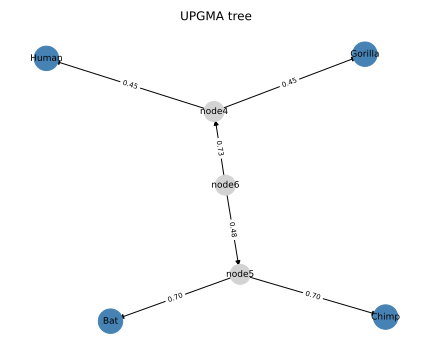

Phylogenetic Tree Reconstruction
The Problem
- Species that share a common ancestor tend to have similar DNA or protein sequences.
- A phylogenetic tree shows how a set of species, genes, or individuals are related by common descent
- The leaves of the tree are the observed taxa, while internal nodes represent hypothetical ancestors
- Given only pairwise sequence distances, we want to infer the tree topology (who is related to whom) and branch lengths (how different they are)
A rooted binary tree on 4 leaves has how many internal nodes (not counting the leaves themselves)?
- 2
- Wrong: a rooted binary tree on N leaves has N-1 internal nodes, so 4-1=3.
- 3
- Correct: a rooted binary tree on N leaves has N-1 internal nodes; here 4-1=3.
- 4
- Wrong: 4 is the number of leaves; the number of internal nodes is N-1=3.
- 5
- Wrong: this would require N=6 leaves.
Distance Matrices
- A distance matrix $D$ stores the evolutionary distance between every pair of taxa
- Distances are estimated from aligned sequences: the fraction of positions that differ, corrected for multiple substitutions
TAXA = ["Bat", "Chimp", "Human", "Gorilla"]
# True branch lengths from the reference tree used to generate distances.
# The tree is: ((Bat:0.6, Chimp:0.8):1.2, (Human:0.4, Gorilla:0.5))
# Pairwise distances are sums of branches on the path between each pair.
_BRANCH = {
("Bat", "Chimp"): 0.6 + 0.8, # 1.4
("Bat", "Human"): 0.6 + 1.2 + 0.4, # 2.2
("Bat", "Gorilla"): 0.6 + 1.2 + 0.5, # 2.3
("Chimp", "Human"): 0.8 + 1.2 + 0.4, # 2.4
("Chimp", "Gorilla"): 0.8 + 1.2 + 0.5, # 2.5
("Human", "Gorilla"): 0.4 + 0.5, # 0.9
}
The six pairwise distances for our four-taxon example:
| Pair | Distance |
|---|---|
| Bat, Chimp | 1.4 |
| Human, Gorilla | 0.9 |
| Bat, Human | 2.2 |
| Bat, Gorilla | 2.3 |
| Chimp, Human | 2.4 |
| Chimp, Gorilla | 2.5 |
def make_distance_matrix(noise_scale=0.0, seed=SEED):
"""Return (names, D) where D is the symmetric pairwise distance matrix.
When noise_scale=0.0 (default) the distances are exact tree-additive values.
A non-zero noise_scale adds symmetric Gaussian noise so that the distances
no longer satisfy the four-point condition exactly, simulating real data.
"""
n = len(TAXA)
D = np.zeros((n, n))
for i, a in enumerate(TAXA):
for j, b in enumerate(TAXA):
if i < j:
key = (a, b) if (a, b) in _BRANCH else (b, a)
D[i, j] = D[j, i] = _BRANCH[key]
if noise_scale > 0.0:
rng = np.random.default_rng(seed)
noise = rng.normal(0, noise_scale, (n, n))
noise = (noise + noise.T) / 2 # keep symmetric
np.fill_diagonal(noise, 0)
D = np.maximum(D + noise, 0) # distances must be non-negative
return list(TAXA), D
The UPGMA Algorithm
- UPGMA (Unweighted Pair Group Method with Arithmetic Mean) reconstructs a rooted tree from a distance matrix using only arithmetic means
- At each step, merge the pair of taxa with the smallest pairwise distance
- Place the new internal node at height $D(i,j)/2$ (i.e., half the merged distance) which is the estimated time of the common ancestor
- Branch length from the new node to each merged taxon is the difference in heights
- Update the distance from the new node $u$ to any remaining taxon $k$ as the arithmetic mean:
$$D(u, k) = \frac{D(i, k) + D(j, k)}{2}$$
- Replace $i$ and $j$ with $u$ in the matrix and repeat until only one node remains.
Put these steps for one iteration of UPGMA in the correct order.
- Find the pair (i, j) with the smallest distance in the current matrix
- Create a new internal node u at height D(i, j) / 2
- Record branch lengths: branch to i = height(u) - height(i), branch to j = height(u) - height(j)
- Compute distances from u to all remaining taxa as arithmetic means
- Remove i and j from the matrix, add u, and repeat
A Worked Example
- Starting with $n = 4$ taxa and the distances above, Human and Gorilla have the smallest distance (0.9), so they are merged first into node4 at height $0.9/2 = 0.45$
- Branch lengths: $\ell_\text{Human} = 0.45 - 0 = 0.45$ and $\ell_\text{Gorilla} = 0.45 - 0 = 0.45$ (both start at height 0)
- After replacing Human and Gorilla with node4, the next smallest distance is Bat-Chimp (1.4), which becomes node5 at height $1.4/2 = 0.70$. Branch lengths to Bat and Chimp are each $0.70 - 0 = 0.70$.
- The final merge joins node4 and node5. The average distance between node4 and node5, computed as the arithmetic mean of all pairwise distances between the two groups, works out to $2.35$. The final node (node6) sits at height $2.35/2 = 1.175$. Branch lengths are $1.175 - 0.45 = 0.725$ to node4 and $1.175 - 0.70 = 0.475$ to node5.
Why does UPGMA assume a molecular clock?
- Because it always picks the pair with the smallest distance, regardless of how far each taxon is from others.
- Wrong: that is the merge criterion, not the clock assumption.
- Because it places each internal node at half the merged distance, assuming all lineages evolve at the same rate.
- Correct: placing the node at $D(i,j)/2$ assumes that $i$ and $j$ are equidistant from their common ancestor, which requires equal rates of evolution in both lineages.
- Because it uses arithmetic means to update distances.
- Wrong: the arithmetic mean update is a computational convenience, not the molecular clock assumption.
- Because it produces a rooted tree rather than an unrooted tree.
- Wrong: whether a tree is rooted or unrooted is independent of the clock assumption.
Displaying the Tree
def draw_tree(edges, taxa, filename):
"""Save a rooted tree diagram to `filename`.
Leaf nodes (members of `taxa`) are drawn in blue; internal nodes in grey.
Edge labels show branch lengths rounded to two decimal places.
"""
G = nx.DiGraph()
for parent, child, length in edges:
G.add_edge(parent, child, weight=round(length, 4))
# Use a simple hierarchical layout via networkx spring layout.
pos = nx.spring_layout(G.to_undirected(), seed=7)
leaf_nodes = [nd for nd in G.nodes() if nd in taxa]
internal_nodes = [nd for nd in G.nodes() if nd not in taxa]
fig, ax = plt.subplots(figsize=(6, 5))
nx.draw_networkx_nodes(
G, pos, nodelist=leaf_nodes, node_color="steelblue", node_size=600, ax=ax
)
nx.draw_networkx_nodes(
G, pos, nodelist=internal_nodes, node_color="lightgrey", node_size=400, ax=ax
)
nx.draw_networkx_labels(G, pos, ax=ax, font_size=9)
nx.draw_networkx_edges(G, pos, ax=ax, arrows=True)
edge_labels = {(p, c): f"{length:.2f}" for p, c, length in edges}
nx.draw_networkx_edge_labels(
G, pos, edge_labels=edge_labels, font_size=7, ax=ax
)
ax.set_title("UPGMA tree")
ax.axis("off")
plt.tight_layout()
plt.savefig(filename)
plt.close(fig)

Testing
-
Matrix symmetry
- Distances must satisfy $D(i,j) = D(j,i)$ and $D(i,i) = 0$
- An asymmetric matrix would indicate a bug in the construction code
-
Edge count
- A rooted binary tree on $N$ leaves has exactly $2N - 2$ directed edges (each of the $N - 1$ internal nodes contributes two child edges)
- Any other count means the loop terminated early or ran too many iterations
-
Topology recovery
- Two pairs of taxa (Bat, Chimp) and (Human, Gorilla) should each share a private internal node
- If either pair is split across different internal nodes, the algorithm recovered the wrong topology
-
Branch length recovery
- With exact tree-additive distances the algorithm recovers every branch length to machine precision
- No tolerance is needed: floating-point round-off in the arithmetic means is below $10^{-10}$
-
Topology under noise
- Real distance data are not perfectly additive
- With small Gaussian noise (scale 0.05) the correct topology should still be recovered
- This test documents the robustness of UPGMA to modest measurement error
import numpy as np
from phylo import TAXA, make_distance_matrix, upgma
# Tolerance for floating-point comparisons in branch-length tests.
# UPGMA computes only averages and halvings, so round-off is well below 1e-10.
BRANCH_TOLERANCE = 1e-10
def test_matrix_symmetric():
# The distance matrix must be symmetric with zero diagonal.
names, D = make_distance_matrix()
assert np.allclose(D, D.T)
assert np.all(np.diag(D) == 0.0)
def test_upgma_edge_count():
# A rooted binary tree on N leaves has exactly 2N-2 directed edges
# (each internal node contributes two child edges; there are N-1 internal nodes).
names, D = make_distance_matrix()
edges = upgma(names, D)
assert len(edges) == 2 * len(TAXA) - 2
def test_upgma_recovers_topology():
# The reference tree groups (Bat, Chimp) and (Human, Gorilla).
# UPGMA should merge Human+Gorilla first (smallest distance 0.9),
# then Bat+Chimp (next smallest distance 1.4), then join the two clades.
names, D = make_distance_matrix()
edges = upgma(names, D)
# Build parent-child adjacency from edges.
children = {}
for parent, child, _ in edges:
children.setdefault(parent, []).append(child)
# Find the internal node whose children are both leaves from the same clade.
def siblings(taxon_a, taxon_b):
for parent, kids in children.items():
if taxon_a in kids and taxon_b in kids:
return True
return False
assert siblings("Human", "Gorilla"), "Human and Gorilla should be sisters"
assert siblings("Bat", "Chimp"), "Bat and Chimp should be sisters"
def test_upgma_recovers_branch_lengths():
# With exact distances UPGMA should recover branch lengths to machine precision.
# UPGMA merges in this order:
# node4 <- Human (0.45), Gorilla (0.45) [merge height = 0.9/2 = 0.45]
# node5 <- Bat (0.70), Chimp (0.70) [merge height = 1.4/2 = 0.70]
# node6 <- node4 (0.725), node5 (0.475) [merge height = 2.35/2 = 1.175]
# Branch length = merge height of parent - height of child.
expected = {
("node4", "Human"): 0.45,
("node4", "Gorilla"): 0.45,
("node5", "Bat"): 0.70,
("node5", "Chimp"): 0.70,
("node6", "node4"): 0.725,
("node6", "node5"): 0.475,
}
names, D = make_distance_matrix()
edges = upgma(names, D)
assert len(edges) == len(expected), f"Expected {len(expected)} edges, got {len(edges)}"
for parent, child, length in edges:
key = (parent, child)
assert key in expected, f"Unexpected edge {parent} -> {child}"
assert abs(length - expected[key]) < BRANCH_TOLERANCE, (
f"Edge {parent}->{child}: got {length:.8f}, expected {expected[key]:.8f}"
)
def test_upgma_with_noise_recovers_topology():
# With small Gaussian noise (scale 0.05) the correct topology should still
# be recovered. The Human-Gorilla distance (0.9) is well below the next
# smallest (Bat-Chimp at 1.4), so modest noise rarely disrupts the merge order.
names, D = make_distance_matrix(noise_scale=0.05)
edges = upgma(names, D)
children = {}
for parent, child, _ in edges:
children.setdefault(parent, []).append(child)
def siblings(taxon_a, taxon_b):
for parent, kids in children.items():
if taxon_a in kids and taxon_b in kids:
return True
return False
assert siblings("Human", "Gorilla"), (
"Human and Gorilla should be sisters even under small noise"
)
assert siblings("Bat", "Chimp"), (
"Bat and Chimp should be sisters even under small noise"
)
Generating Random Trees
- A single hand-crafted example is useful for tracing through the algorithm, but it cannot reveal how UPGMA behaves on different topologies or at larger scales
generate_tree.pyprovidesmake_random_treewhich builds a random unrooted binary tree and returns its exact distance matrix alongside the true edge list
Building a random topology
- Start with three leaves connected to a single internal node
- For each additional taxon
- Pick a random existing edge
- Insert a new internal node in the middle of it
- Attach the new taxon to that node
- Branch lengths are drawn independently from an exponential distribution with a specified mean
def make_random_tree(
n_taxa, seed=SEED, branch_mean=DEFAULT_BRANCH_MEAN, noise_scale=0.0
):
"""Return (names, D, true_edges) for a random unrooted binary tree.
names — list of n_taxa strings "S00", "S01", ...
D — n_taxa x n_taxa symmetric distance matrix
true_edges — list of (node_a, node_b, length) for the generating tree
"""
if n_taxa < MIN_TAXA:
raise ValueError(f"n_taxa must be at least {MIN_TAXA}, got {n_taxa}")
rng = np.random.default_rng(seed)
names = [f"S{i:02d}" for i in range(n_taxa)]
# Start with the three-leaf star: S00, S01, S02 all connected to I0.
internal_counter = 0
first_internal = f"I{internal_counter}"
internal_counter += 1
edges = [
[names[0], first_internal, rng.exponential(branch_mean)],
[names[1], first_internal, rng.exponential(branch_mean)],
[names[2], first_internal, rng.exponential(branch_mean)],
]
# Insert each remaining taxon by splitting a random existing edge.
for i in range(3, n_taxa):
idx = int(rng.integers(len(edges)))
u, v, _ = edges.pop(idx)
new_internal = f"I{internal_counter}"
internal_counter += 1
edges.append([u, new_internal, rng.exponential(branch_mean)])
edges.append([v, new_internal, rng.exponential(branch_mean)])
edges.append([names[i], new_internal, rng.exponential(branch_mean)])
# Compute all pairwise distances through the tree.
G = nx.Graph()
for a, b, w in edges:
G.add_edge(a, b, weight=w)
all_dists = dict(nx.all_pairs_dijkstra_path_length(G, weight="weight"))
n = len(names)
D = np.zeros((n, n))
for i, a in enumerate(names):
for j, b in enumerate(names):
D[i, j] = all_dists[a][b]
if noise_scale > 0.0:
noise = rng.normal(0, noise_scale, (n, n))
noise = (noise + noise.T) / 2
np.fill_diagonal(noise, 0)
D = np.maximum(D + noise, 0.0)
true_edges = [(a, b, w) for a, b, w in edges]
return names, D, true_edges
Computing distances and checking topology
- Once the tree is built, pairwise distances are computed as shortest-path lengths through the networkx graph weighted by branch length
- To compare topologies,
each tree is converted to its set of bipartitions
- For every edge, the two groups of leaves on either side
- Two trees have the same topology if and only if their bipartition sets are identical
import numpy as np
import pytest
from generate_tree import make_random_tree, bipartitions, MIN_TAXA
from phylo import neighbor_joining
def test_rejects_too_few_taxa():
with pytest.raises(ValueError):
make_random_tree(MIN_TAXA - 1)
def test_edge_count():
# An unrooted binary tree on N leaves has exactly 2N-3 edges.
for n in [3, 5, 8, 12]:
_, _, edges = make_random_tree(n)
assert len(edges) == 2 * n - 3, f"n={n}: got {len(edges)} edges"
def test_distance_matrix_properties():
names, D, _ = make_random_tree(6)
assert D.shape == (6, 6)
assert np.allclose(D, D.T)
assert np.all(np.diag(D) == 0.0)
assert np.all(D >= 0.0)
def test_nj_recovers_true_topology():
# With exact tree-additive distances, NJ must recover every bipartition
# of the generating tree. This holds for all tree-additive inputs
# regardless of topology or branch lengths.
for seed in [1, 7, 42, 99]:
names, D, true_edges = make_random_tree(6, seed=seed)
inferred_edges = neighbor_joining(names, D)
true_splits = bipartitions(true_edges, names)
inferred_splits = bipartitions(inferred_edges, names)
assert true_splits == inferred_splits, (
f"seed={seed}: topology mismatch\n true: {true_splits}\n inferred: {inferred_splits}"
)
def test_nj_recovers_topology_under_noise():
# With small Gaussian noise (scale 0.05 ≈ 10% of the default branch mean)
# NJ should still recover the correct topology on most random trees.
# We test four seeds and require all four to succeed. Measured failure
# rate at this noise level is below 1% for N=6 with branch_mean=0.5.
for seed in [1, 7, 42, 99]:
names, D, true_edges = make_random_tree(6, seed=seed, noise_scale=0.05)
inferred_edges = neighbor_joining(names, D)
true_splits = bipartitions(true_edges, names)
inferred_splits = bipartitions(inferred_edges, names)
assert true_splits == inferred_splits, (
f"seed={seed}: topology mismatch under noise"
)
def test_reproducibility():
# Same seed must always produce identical output.
names1, D1, edges1 = make_random_tree(8)
names2, D2, edges2 = make_random_tree(8)
assert names1 == names2
assert np.array_equal(D1, D2)
assert edges1 == edges2
def test_different_seeds_differ():
_, D1, _ = make_random_tree(6)
_, D2, _ = make_random_tree(6, seed=999)
assert not np.allclose(D1, D2)
Exercises
Do the math
In the first UPGMA iteration Human and Gorilla are merged. $D(\text{Human}, \text{Gorilla}) = 0.9$. The new internal node is placed at height $D/2$. What is the branch length from the new node to Human? Give your answer to two decimal places.
Neighbor-joining comparison
Neighbor-joining (Saitou and Nei, 1987) uses a Q-matrix correction that removes long-branch
attraction bias and does not assume a molecular clock.
Implement neighbor_joining(names, D) returning edges as (node_a, node_b, length) triples.
Verify that UPGMA and neighbor-joining agree on the topology for the exact distance matrix,
then add noise (scale 0.05) and show a case where they disagree.
Bootstrapping
Phylogenetic bootstrap estimates how well-supported each split is.
Draw 100 perturbed distance matrices using make_distance_matrix(noise_scale=0.1, seed=i)
for $i = 0, \ldots, 99$ and run UPGMA on each.
Report what fraction of replicates recover the correct (Bat, Chimp) clade.
Four-point condition
A distance matrix is tree-additive if and only if it satisfies the four-point condition:
for every four taxa $i, j, k, l$, the largest two of the three sums
$D(i,j)+D(k,l)$, $D(i,k)+D(j,l)$, $D(i,l)+D(j,k)$ are equal.
Write is_additive(names, D) that checks this condition for all $\binom{N}{4}$ quadruples
and returns True or False.
Verify that the exact matrix passes and a noisy matrix fails.
Larger synthetic trees
Extend make_distance_matrix to accept an arbitrary Newick-format string such as
"((A:0.1,B:0.2):0.3,(C:0.4,D:0.5):0.6)" and compute the full distance matrix from it.
Use this to generate a 10-taxon example and confirm that UPGMA recovers the correct topology.